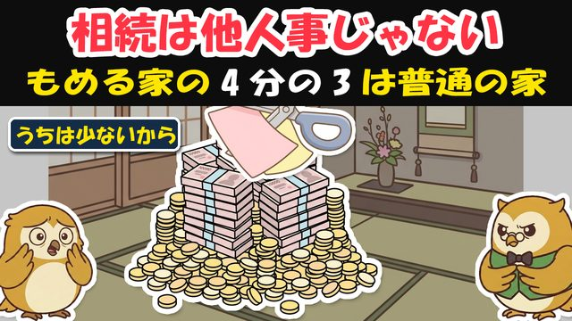

🎁 わが家の相続 手順シート（渡す→遺す→分ける の順番でわかる）


よく来たな。約束の物を渡す。
この1枚は、「渡す→遺す→分ける」の順番で、今やることが分かる手順シートだ。むずかしい税金の話は要らない——順番どおりに、上から一つずつでいい。
手順① 渡す——生前贈与は「早めに・毎年」
- 渡すなら、元気なうちから毎年コツコツ——あわてて駆け込みで渡すほど、後で「足し戻し」に当たる。
- 「7年ルール」を知っておく——亡くなる前7年以内（2024年から順次3年→7年へ延長中）に渡した贈与は、相続財産に足し戻される＝駆け込みは効かない。
- まとまって渡すなら「相続時精算課税」も検討——この制度を選ぶと、年110万円ぶんは足し戻されない。ただし一度選ぶと元に戻せないので、税務署か税理士に相談してから。
手順② 遺す——現金のまま置かず「保険のかたち」に

□ まず「ここまで無税」の線＝基礎控除を知る
| 法定相続人 | 基礎控除（ここまで無税） |
|---|---|
| 1人 | 3,600万円 |
| 2人 | 4,200万円 |
| 3人 | 4,800万円 |
（計算式は「3,000万円＋600万円×人数」。たとえば相続人2人で遺産5,000万円なら、はみ出た800万円に税がかかる）
□ 使う予定のない現金は「保険のかたち」に
→ 死亡保険金は500万円×人数まで非課税。しかもこの枠は基礎控除とは別枠——両方使える。受取人を渡したい人に指定すれば、その人へ直接届く。
手順③ 分ける——「誰に・何を」を先に紙に
- 「誰に・何を」を、生きているうちに紙に残す——割れない家・土地こそ、先に決めておく。
- 分けた「なぜ」の気持ちも、一筆そえる——金額より、この一言がもめごとを防ぐ。
- 自筆の遺言は「形式が命」——日付・署名・押印など、形式を外すと無効になる。不安なら専門家（公正証書遺言）に。

覚えておく数字（この4つだけ）
| 数字 | 意味 |
|---|---|
| 7年 | 亡くなる前この期間の生前贈与は相続財産に足し戻される（3年→7年へ延長中） |
| 3,000万＋600万×人数 | 基礎控除（ここまで無税）。1人3,600万・2人4,200万・3人4,800万 |
| 500万×人数 | 生命保険金の非課税枠（基礎控除とは別枠） |
| 約76% | 家裁でもめた家のうち、遺産5,000万円以下の割合（令和6年） |
🎁 おまけ（動画では話していない）——「精算課税」を選ぶ前のチェック
相続時精算課税は便利だが、選ぶ前に確かめることがある。
- 一度選ぶと、暦年贈与（毎年110万の非課税）に戻せない——「今年だけ」のつもりで選ばない。
- 贈与する人ごとに選ぶ——父からは精算課税、母からは暦年、という使い分けはできる。
- 少額を毎年こまめに渡す家は、暦年のままが有利なことも——「まとめて大きく渡したい」家に向く制度だ。迷ったら、渡す前に税務署か税理士へ一言。
相続は、早めに・かたちを整えて・分け方を先に。
生前贈与は7年に気をつけ、現金は保険の非課税枠を使う。「誰に何を」を紙に残せば、税金と争いから、遺すお金をそっくり守れる。